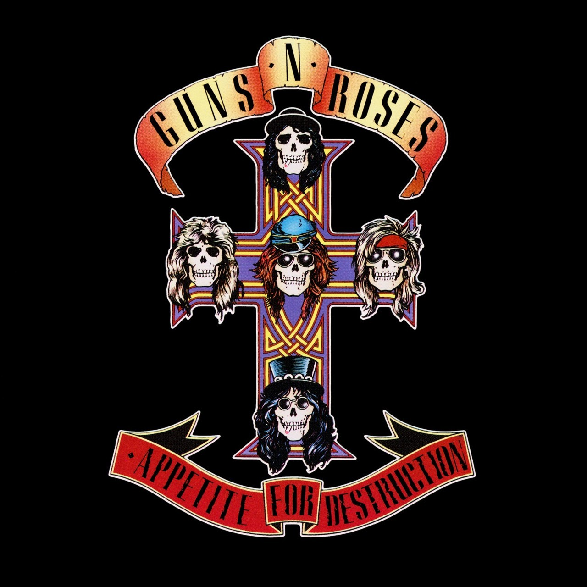
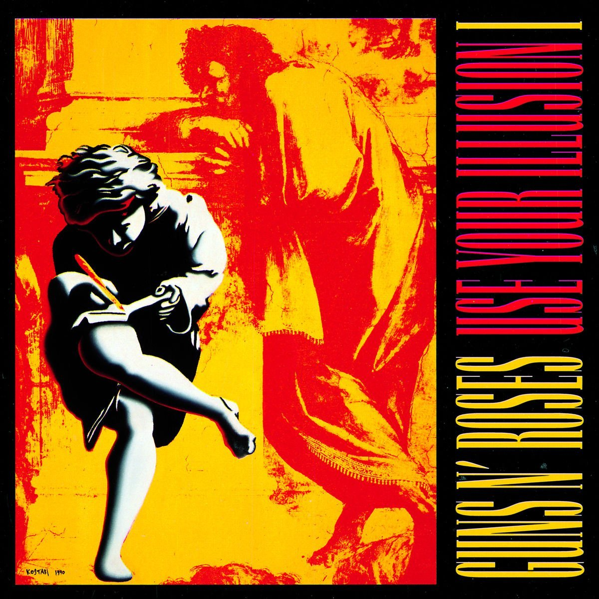
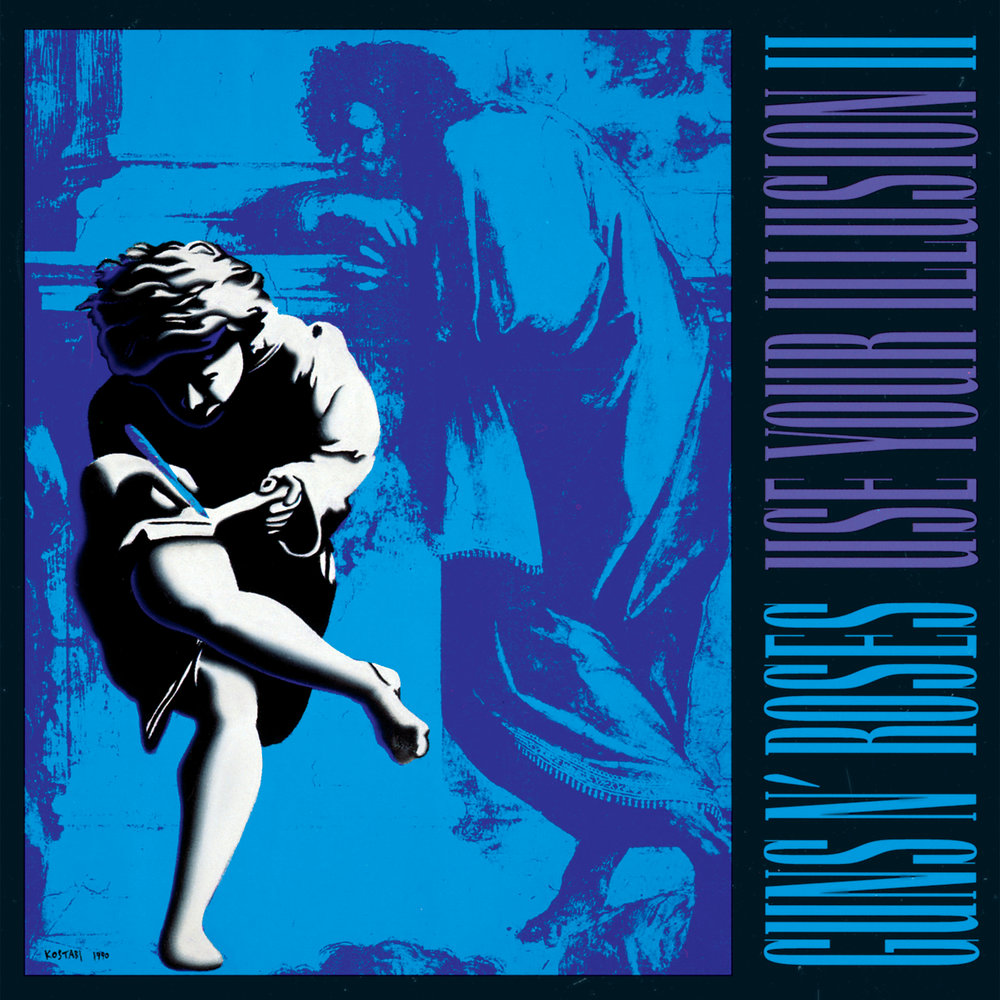

The band's greatest albums

"Appetite for Destruction"
Released: July 21, 1987
The album was released to little mainstream attention in 1987. It was not until the following year that it became a massive commercial success, after the band had toured and received airplay with the singles "Welcome to the Jungle", "Paradise City" and "Sweet Child o' Mine". It topped the Billboard 200 and became the best-selling debut album of all time, as well as the eleventh best-selling album of all time in the United States. With over 30 million copies sold worldwide, it is also one of the best-selling records of all time.
Hide detailed description
The album was released to little mainstream attention in 1987. It was not until the following year that it became a massive commercial success, after the band had toured and received airplay with the singles "Welcome to the Jungle", "Paradise City" and "Sweet Child o' Mine". It topped the Billboard 200 and became the best-selling debut album of all time, as well as the eleventh best-selling album of all time in the United States. With over 30 million copies sold worldwide, it is also one of the best-selling records of all time.

"Use Your Illusion I"
Released: September 17, 1991
The Use Your Illusion albums represent a turning point in the sound of Guns N' Roses. Although the band did not abandon the aggressive hard-rock sound it had become known for with 1987's Appetite for Destruction, Use Your Illusion I demonstrated a new-found musical maturity, incorporating elements of blues, classical music, heavy metal, punk rock, and classic rock and roll. This is exemplified by the use of piano on several tracks by singer Axl Rose and keyboardist Dizzy Reed, as well as on Use Your Illusion II. Use Your Illusion I contains two of the three songs, "November Rain" and "Don't Cry", whose videos are considered a trilogy.[4] The third song, "Estranged", can be found on Use Your Illusion II.
Hide detailed description
The Use Your Illusion albums represent a turning point in the sound of Guns N' Roses. Although the band did not abandon the aggressive hard-rock sound it had become known for with 1987's Appetite for Destruction, Use Your Illusion I demonstrated a new-found musical maturity, incorporating elements of blues, classical music, heavy metal, punk rock, and classic rock and roll. This is exemplified by the use of piano on several tracks by singer Axl Rose and keyboardist Dizzy Reed, as well as on Use Your Illusion II. Use Your Illusion I contains two of the three songs, "November Rain" and "Don't Cry", whose videos are considered a trilogy.[4] The third song, "Estranged", can be found on Use Your Illusion II.

"Use Your Illusion II"
Released: September 17, 1991
The Use Your Illusion albums were a stylistic turning point for Guns N' Roses (see Use Your Illusion I). In addition, Use Your Illusion II is more political than most of their previous work, with songs like "Civil War", a cover of Bob Dylan's "Knockin' on Heaven's Door," and "Get in the Ring" dealing respectively with the topics of violence, law enforcement and media bias. The thematic material deals less with drug use than previous Guns N' Roses albums. Use Your Illusion I featured several songs pre-Appetite for Destruction while Use Your Illusion II featured more tracks written during and after Appetite For Destruction.
Hide detailed description
The Use Your Illusion albums were a stylistic turning point for Guns N' Roses (see Use Your Illusion I). In addition, Use Your Illusion II is more political than most of their previous work, with songs like "Civil War", a cover of Bob Dylan's "Knockin' on Heaven's Door," and "Get in the Ring" dealing respectively with the topics of violence, law enforcement and media bias. The thematic material deals less with drug use than previous Guns N' Roses albums. Use Your Illusion I featured several songs pre-Appetite for Destruction while Use Your Illusion II featured more tracks written during and after Appetite For Destruction.